Кровь: состав и функции
Кровь человека составляет примерно 8% от массы тела. Кровь состоит из клеток, клеточных фрагментов и водного раствора, плазмы. Доля клеточных элементов в общем объеме называется гематокритом и составляет примерно 45%.
А. Функции крови
Кровь осуществляет в организме различные функции. Она является транспортным средством, поддерживает постоянство «внутренней среды» организма (гомеостаз) и играет главную роль в защите от чужеродных веществ.
Транспорт. Кровь переносит газы — кислород и диоксид углерода, а также питательные вещества к печени и другим органам после всасывания в кишечнике. Такой транспорт обеспечивает снабжение органов и обмен веществ в тканях, а также последующий перенос конечных продуктов метаболизма для их выведения из организма легкими, печенью и почками. Кровь осуществляет также перенос гормонов в организме.
Гомеостаз. Кровь поддерживает водный баланс между кровеносной системой, клетками (внутриклеточным пространством) и внеклеточной средой. Кислотно-основное равновесие в крови регулируется легкими, печенью и почками. Поддержание температуры тела также зависит от контролируемого кровью транспорта тепла.
Защита. Против чужеродных молекул и клеток, проникающих в организм, кровь обладает неспецифическими и специфическими механизмами защиты. К специфической защитной системе относятся клетки иммунной системы и антитела.
Гемостаз. Для предотвращения кровопотери при повреждении кровеносных сосудов в крови существует эффективная система коагуляции — физиологическое свертывание (гемостаз). Растворение кровяных сгустков (фибринолиз) также обеспечивается кровью.
Б. Клетки крови
Нерастворимыми элементами крови являются эритроциты, лейкоциты и тромбоциты.
К лейкоцитам принадлежат различные формы гранулоцитов, моноцитов и лимфоцитов. Эти клетки различаются между собой размерами, функцией и местом образования.
Тромбоциты являются клеточными фрагментами больших клеток-предшественников мегакариоцитов костного мозга. Главная функция тромбоцитов — участие в коагуляции крови.
В. Состав плазмы крови
Плазма крови является водным раствором электролитов, питательных веществ, метаболитов, белков, витаминов, следовых элементов и сигнальных веществ.
Определение электролитного состава плазмы крови проводится в клинико-химических лабораториях. По сравнению с составом цитоплазмы в плазме крови обращают внимание относительно высокие концентрации ионов Na+, Са2+ и Cl-. Напротив, концентрации ионов К+, Mg2+ и фосфата ниже, чем в клетках. Концентрация белков также ниже, чем в клетках. Электролитный состав плазмы напоминает морскую воду, что указывает на эволюцию форм жизни из моря.
Список наиболее важных метаболитов плазмы крови приведен на рисунке справа. Белки плазмы крови рассмотрены в следующем разделе.
Жидкая фаза, остающаяся после свертывания крови, называется сывороткой. Она отличается от плазмы тем, что не содержит фибриногена и других белков, которые отделяются при коагуляции крови.
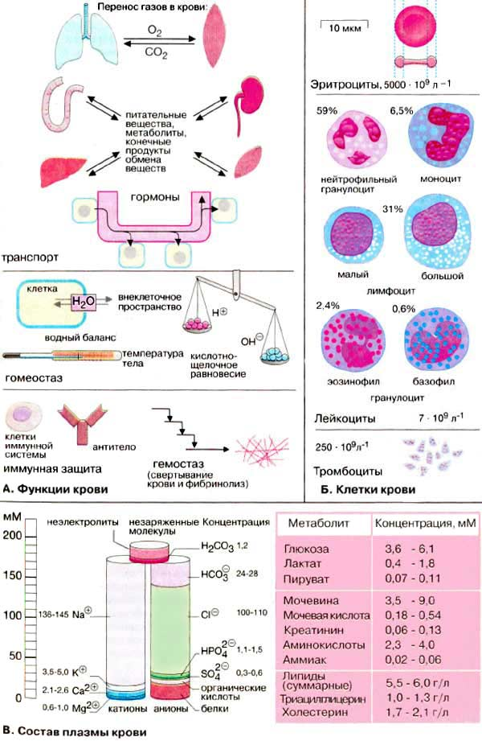
Белки плазмы крови
Основную массу растворимых нелетучих веществ плазмы крови образуют белки. Их концентрация лежит в пределах 60-80 г/л; они составляют примерно 4% всех белков организма.
А. Белки плазмы крови
В плазме крови человека содержится около 100 различных белков. По подвижности при электрофорезе (см. ниже) их можно грубо разделить на пять фракций: альбумин, α1-, α2-, β- и γ-глобулины. Разделение на альбумин и глобулин первоначально основывалось на различии в растворимости: альбумины растворимы в чистой воде, а глобулины — только в присутствии солей.
В количественном отношении среди белков плазмы наиболее представлен альбумин (около 45 г/л), который играет существенную роль в поддержании коллоидно-осмотического давления в крови и служит для организма важным резервом аминокислот. Альбумин обладает способностью связывать липофильные вещества, вследствие чего он может функционировать в качестве белка-переносчика длинноцепочечных жирных кислот, билирубина, лекарственных веществ, некоторых стероидных гормонов и витаминов. Кроме того, альбумин связывает ионы Са2+ и Mg2+.
К альбуминовой фракции принадлежит также транстиретин (преальбумин), который вместе с тироксинсвязывающим глобулином [ТСГл (TBG)] и альбумином транспортирует гормон тироксин и его метаболит иодтиронин.
В таблице приведены другие свойства важных глобулинов плазмы крови. Эти белки участвуют в транспорте липидов, гормонов, витаминов и ионов металлов, они образуют важные компоненты системы свертывания крови; фракция γ-глобулинов содержит антитела иммунной системы.
Образование и разрушение. Большинство белков плазмы синтезируется в клетках печени. Исключение составляют иммуноглобулины, которые продуцируются плазматическими клетками иммунной системы, и пептидные гормоны, секретируемые клетками эндокринных желез.
Кроме альбумина почти все белки плазмы являются гликопротеинами. Они включают олигосахариды, присоединенные к аминокислотным остаткам N- и О-гликозидными связями. В качестве концевого остатка углеводной цепи часто выступает N-ацетилнейраминовая кислота (сиаловая кислота). Если эта группа отщепляется нейраминидазой, ферментом находящимся в стенках кровеносных сосудов, на поверхности белка оказываются концевые остатки галактозы. Остатки галактозы асиалогликопротеинов (т. е. десиалированных белков) узнаются и связываются рецепторами галактозы на гепатоцитах. В печени эти «состарившиеся» белки плазмы удаляются путем эндоцитоза. Таким образом, олигосахариды на поверхности белка определяют время жизни белков плазмы, полупериод выведения (биохимический полупериод) которых составляет от нескольких дней до нескольких недель.
В здоровом организме концентрация белков плазмы поддерживается на постоянном уровне. Однако их концентрация изменяется при заболевании органов, участвующих в синтезе и катаболизме этих белков. Повреждение тканей посредством цитокинов увеличивает образование белков острой фазы, к которым принадлежат С-реактивный белок, гаптоглобин, фибриноген, компонент С-З комплемента и некоторые другие.
Б. Электрофорез
Белки и другие заряженные макромолекулы можно разделять методами электрофореза. Среди различных электрофоретических методов наиболее простым является электрофорез на носителе, особенно на ацетилцеллюлозной пленке. При этом сывороточные белки, которые из-за наличия избыточного отрицательного заряда движутся к аноду, разделяются на пять вышеупомянутых фракций. После разделения белки можно окрашивать с помощью красителей и денситометрически оценивать количества белков в полученных окрашенных полосах.
При определенных заболеваниях изменяются концентрации отдельных белков (так называемые диспротеинемии).
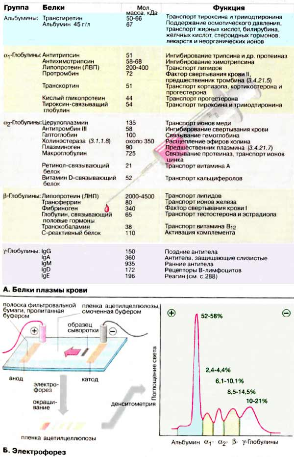
Липопротеины
Липопротеины плазмы подразделяются на две группы: белки, связанные с липидами ковалентно, и белки, связанные с липидами нековалентными связями. Липид, ковалентно связанный с липопротеином, служит якорем, с помощью которого белки прикрепляются к мембране. Липопротеины второй группы не имеют строго определенного состава. Они скорее представляют собой агрегаты липидов с белками. Эти липопротеиновые комплексы имеют переменные размеры и состав. В плазме крови они обеспечивают транспорт водонерастворимых липидов.
А. Состав липопротеиновых комплексов
Липопротеиновые комплексы представляют собой шаровидные агрегаты, состоящие из ядра, образованного неполярными липидами (триацилглицеринами и ацилхолестеринами), и оболочки толщиной примерно 2 нм, построенной из апопротеинов и амфифильных липидов (фосфолипидов и холестерина). Наружная сторона оболочки полярна, вследствие этого липиды растворимы в плазме. Чем больше липидное ядро, т. е. чем большую часть составляют неполярные липиды, тем меньше плотность липопротеинового комплекса.
Липопротеиновые комплексы делятся на пять групп. Ниже они приведены в порядке уменьшения размера и увеличения плотности: это хиломикроны и остатки хиломикронов, липопротеины очень низкой плотности [ЛОНП (VLDL от англ. very low density lipoproteins)], липопротеины промежуточной плотности [ЛПП (IDL от англ. intermediate density lipoproteins)], липопротеины низкой плотности [ЛНП (LOL от англ. low density lipoproteins)], липопротеины высокой плотности [ЛВП (HDL от англ. high density lipoproteins)]. Липопротеиновые комплексы несут на внешней поверхности характерный апопротеин, который «плавает» на оболочке (здесь в качестве примера ЛНП). Апопротеины играют решающую роль в функционировании липопротеинов: они служат молекулами узнавания для мембранных рецепторов (см. ниже) и необходимыми партнерами для ферментов и белков, которые участвуют в метаболизме и обмене липидов.
Б. Транспорт триацилглицеринов и холестерина
Хиломикроны обеспечивают транспорт пищевых липидов от кишечника к тканям. Хиломикроны образуются в слизистой кишечника и транспортируются в кровь лимфатической системой. В мышцах и жировой ткани они разрушаются липазой липопротеинов, активирующейся апопротеином С-II. Под действием этого фермента хиломикроны быстро теряют бóльшую часть своих триацилглицеринов. Остатки хиломикронов утилизируются печенью.
ЛОНП, ЛПП и ЛНП тесно связаны между собой. Они транспортируют триацилглицерины, холестерин и фосфолипиды от печени к тканям. ЛОНП образуются в печени и могут превращаться, как и хиломикроны, в ЛПП и ЛНП путем отщепления жирных кислот. Образующиеся ЛНП снабжают холестерином различные ткани организма.
ЛВП возвращают избыточный холестерин, образующийся в тканях, обратно в печень. Во время транспорта холестерин ацилируется жирными кислотами из лецитина. В этом процессе участвует лецитинхолестеринацилтрансфераза (КФ 2.3.1.43). Между ЛВП и ЛОНП также происходит обмен липидами и белками.
Эндоцитоз, опосредованный рецептором. При потреблении холестерина клетки с помощью мембранных рецепторов, узнающих апо-В-100 и апо-Е, связывают ЛНП. «ЛНП-рецепторы» захватывают эти комплексы путем эндоцитоза. Поглощение происходит в так называемых «окаймленных ямках» — областях мембран, у которых внутренняя поверхность выстлана белком клатрином. Клатрин облегчает включение в ямку и содействует отделению везикулы ("окаймленная везикула"). Внутри клетки клатрин отделяется от везикулы и используется повторно. Везикула связывается с лизосомой, которая переваривает ее содержимое.
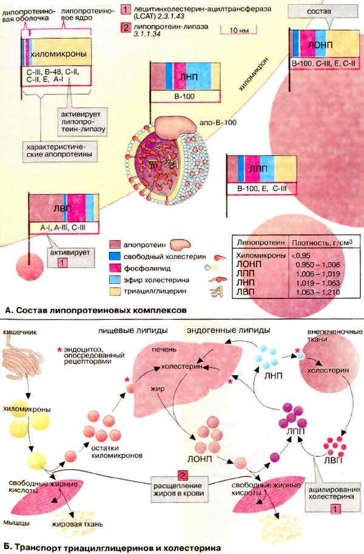
Гемоглобин
Главная функция эритроцитов — транспорт кислорода от легких в ткани и СО2 от тканей обратно в легкие. Высшие организмы нуждаются для этого в специальной транспортной системе, так как молекулярный кислород плохо растворим в воде: в 1 л плазмы крови растворимо только около 3,2 мл О2. Содержащийся в эритроцитах белок гемоглобин (Hb) способен связать в 70 раз больше — 220 мл О2/л. Содержание Hb в крови составляет 140-180 г/л у мужчин и 120-160 г/л у женщин, т. е. вдвое выше по сравнению с белками плазмы (50-80 г/л). Поэтому Hb вносит наибольший вклад в образование рН-буферной емкости крови.
А. Структура гемоглобина
Гемоглобин взрослого организма (HbA, см. ниже) является тетрамером, состоящим из двух α- и двух β-субьединиц с молекулярными массами примерно 16 кДа. α- и β-цепи отличаются аминокислотной последовательностью, но имеют сходную конформацию. Примерно 80% аминокислотных остатков глобина образуют α-спирали, обозначенные буквами А-Н (см. схему). Каждая субъединица несет группу гема с ионом двухвалентного железа в центре. При связывании O2 с атомом железа в геме (оксигенация Hb) и отщеплении O2 (дезоксигенация) степень окисления атома железа не меняется. Окисление Fe2+ до Fe3+ в геме носит случайный характер. Окисленная форма гемоглобина, метгемоглобин, не способна переносить O2. Доля метгемоглобина поддерживается ферментами на низком уровне и составляет поэтому обычно только 1-2%.
Четыре из шести координационных связей атома железа в гемоглобине заняты атомами азота пиррольных колец, пятая — остатком гистидина глобина (проксимальный остаток гистидина), а шестая — молекулой кислорода в оксигемоглобине и, соответственно, Н2О в дезоксигемоглобине.
Б. Аллостерические эффекты в гемоглобине
Аналогично аспартат-карбамоилтрансферазе Hb может находиться в двух состояниях (конформациях): обозначаемых как Т- и R-формы соответственно. Т-Форма (напряженная от англ. tense) обладает существенно более низким сродством к O2 по сравнению с R-формой (на схеме справа). Связывание O2 с одной из субъединиц Т-формы приводит к локальным конформационным изменениям, которые ослабляют связь между субъединицами. С возрастанием парциального давления O2 увеличивается доля молекул Hb в высокоаффинной R-форме (от англ. relaxed). Благодаря кооперативным взаимодействиям между субъединицами с ростом концентрации кислорода повышается сродство Hb к O2, в результате чего кривая насыщения имеет сигмоидальный вид.
На равновесие между Т- и R-формами влияют различные аллостерические эффекторы, регулирующие связывание O2 гемоглобином (желтые стрелки). К наиболее важным эффекторам относятся CO2, Н+ и 2,3-дифосфоглицерат [ДФГ (BPG)].
Дополнительная информация
Hb взрослого организма состоит, как упомянуто выше, из двух α- и двух β-цепей (α2β2). Наряду с этой основной формой (HbA1) в крови присутствуют незначительные количества второй формы с более высоким сродством к O2, у второй β-цепи заменены δ-цепя-ми (HbA2, α2δ2). Две другие формы Hb встречаются только в эмбриональном периоде развития. В первые три месяца образуются эмбриональные гемоглобины состава ξ2ε2 и α2γ2. Затем вплоть до рождения доминирует фетальный гемоглобин (HbF, α2δ2), который постепенно заменяется на первом месяце жизни на HbА. Эмбриональный и фетальный гемоглобины обладают более высоким сродством к О2 по сравнению с HbА, так как они должны переносить кислород из системы материнского кровообращения.
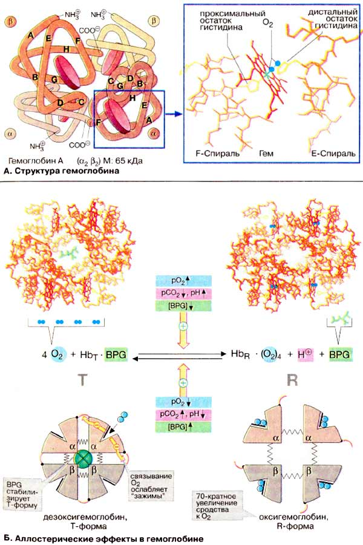
Транспорт газов
Большинство тканей для поддержания своего окислительного потенциала постоянно снабжаются молекулярным кислородом (O2). Из-за плохой растворимости O2 связывается и транспортируется в крови гемоглобином. Свойства Hb таковы, что он не только обеспечивает транспорт кислорода, но и создает благоприятные условия для связывания O2 в легких и передачи его тканям.
А. Регуляция транспорта O2
ЕСЛИ фермент реагирует на эффекторы (субстрат, активатор или ингибитор) повышением или понижением активности благодаря конформационным изменениям, то в этом случае говорят об аллостерической регуляции. Аллостерические ферменты являются, как правило, олигомерами, состоящими из нескольких субъединиц, которые взаимно влияют друг на друга.
Хотя гемоглобин не является ферментом (он связывает и отдает кислород неизмененным), он имеет все признаки аллостерического белка. Его эффектором служит кислород, который как положительный гомотропный эффектор с повышением концентрации увеличивает константу связывания. Кривая насыщения гемоглобина O2 имеет ярко выраженный сигмоидальный характер (2, кривая 2). Для сравнения приведена несигмоидальная кривая насыщения мышечного белка миоглобина (2, кривая 1). Миоглобин похож по структуре на гемоглобины, но, являясь мономером, не обнаруживает аллостерических свойств.
В качестве гетеротропных эффекторов гемоглобинов выступают СO2 и Н+-ионы (см. Б) и в особенности метаболит эритроцитов 2,3-дифосфоглицерат [ДФГ (BPG)]. ДФГ синтезируется из 1,3-дифосфоглицерата (1), промежуточного продукта гликолиза. ДФГ может снова участвовать в гликолизе, превращаясь в 2-фосфоглицерат, при этом напрасно пропадает АТФ. ДФГ избирательно связывается с дезокси-Hb и увеличивает вследствие этого его равновесную долю в паре Hb/дезокси-Hb. Результатом является повышенное высвобождение O2 при постоянстве рO2. На диаграмме это соответствует смещению кривой насыщения вправо (2, кривая 3). Аналогично ДФГ действуют CO2 и H+-ионы. Такое влияние на положение кривой долгое время было известно под названием эффект Бора. Действия СO2 и ДФГ являются аддитивными. В присутствии обоих эффекторов кривая насыщения изолированного Hb похожа на кривую, полученную для нативной крови (2, кривая 4).
Б. Гемоглобин и транспорт СO2
Гемоглобин участвует также в транспорте диоксида углерода (СO2) от тканей к легким. Примерно 5% образующегося в тканях СO2 ковалентно связываются с N-концом гемоглобина и транспортируется как карбамино-Hb (не показано). Около 90% СO2 превращается в более растворимый гидрокарбонат (HCO3-) (на схеме внизу). В легких (на схеме вверху) из него снова регенерируется СO2, который выводится легкими.
Оба процесса сопряжены с дезоксигенированием и соответственно оксигенированием Hb. Дезокси-Hb — более сильное основание, чем окси-Hb. Он связывает дополнительные протоны (примерно 0,7 H+ на тетрамер) и вследствие этого содействует образованию в своем микроокружении HCO3-из СO2. На мембране эритроцитов HCO3-посредством антипорта обменивается с Cl-и в составе плазмы поступает в легкие, где эти реакции протекают в обратном направлении. Дезокси-Hb оксигенируется и освобождает протоны, которые сдвигают равновесие HCO3-/СO2 влево и тем самым содействуют выделению СO2.
По тому же механизму происходит соединение O2 с Hb, регулируемое Н+-ионами (рН-зависимость). Высокая концентрация СO2, существующая в тканях с интенсивным обменом веществ, увеличивает локальную концентрацию Н+ и снижает сродство гемоглобина к O2 (эффект Бора, см. выше). Это ведет к усиленному освобождению O2 и вместе с тем к лучшему снабжению кислородом.
Без катализатора равновесие между СO2 и HCO3- устанавливается относительно медленно. В эритроцитах эта реакция ускоряется карбонат-дегидратазой («карбоангидразой»), присутствующий в достаточно высокой концентрации.
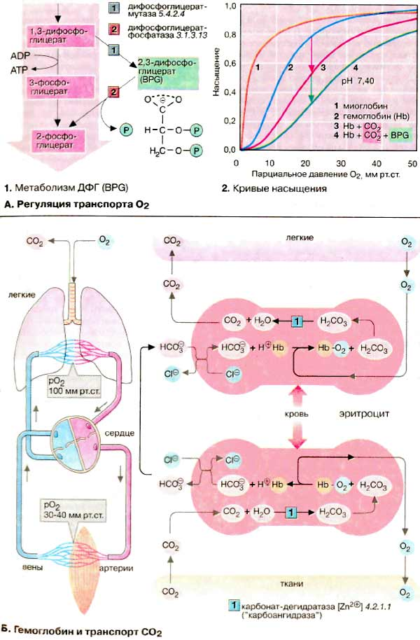
Эритроциты: обмен веществ
Аэробные клетки получают энергию в виде молекулярного кислорода. В то же время из О2 постоянно возникают в небольших количествах токсичные вещества, так называемые активные формы кислорода [АФК (ROS от англ. reactive oxygen species)]. Эти соединения являются сильными окислителями или крайне реакционноспособными свободными радикалами, которые разрушают клеточные структуры и функциональные молекулы. Особенно подвержены АФК-повреждению эритроциты, для которых из-за их транспортной функции характерна высокая концентрация кислорода.
А. Активные формы кислорода
Молекула кислорода (О2) содержит два неспаренных электрона и. таким образом, является бирадикалом. Однако неспаренные электроны расположены так, что молекула О2 остается относительно стабильной. Тем не менее, если молекула присоединяет дополнительный электрон (стадия а), образуется высоко реакционноспособный супероксид-радикал (•О2-) Следующая стадия восстановления (стадия б) приводит к пероксид-аниону (•О22-), который легко связывает протоны и вследствие этого переходит в пероксид водорода (Н2О2). Присоединение третьего электрона (стадия в) ведет к расщеплению молекулы на ионы О2- и О- . В то время как О2- путем присоединения двух протонов образует воду, протонирование О- приводит к особо опасному гидроксил-радикалу (•ОН). Присоединение четвертого электрона и заключительное протонирование О- заканчивается образованием воды.
Образование АФК катализируют, например, ионы железа. АФК постоянно производятся при взаимодействии О2 с ФМН (FMN) или ФАД (FAD). Напротив, восстановление О2 цитохром с-оксидазой ничем не осложнено (протекает без накопления АФК), так как этот фермент не высвобождает промежуточные продукты в среду. Наряду с антиоксидантами (схема Б) имеются ферменты, которые также препятствуют образованию свободных АФК. Например, супероксид-дисмутаза [1] вызывает диспро-порционирование двух супероксид-радикалов на О2 и менее опасный Н2О2. Последний снова диспропорционируется на О2 и Н2О гемсодержащей каталазой [2].
Б. Природные антиоксиданты
Для защиты от АФК и других радикалов все клетки содержат антиоксиданты. Последние являются восстановителями, которые легко реагируют с окисляющими веществами и вследствие этого защищают более важные молекулы от окисления. К биологическим антиоксидантам принадлежат витамины С и Ε, кофермент Q и некоторые каротиноиды. Образующийся при разрушении гема билирубин также служит защитой от окисления. Особенно важен глутатион, трипептид Glu-Cys-Gly, находящийся почти во всех клетках в высокой концентрации. Глутатион содержит нетипичную γ-связь между Glu и Cys. Восстановителем здесь является тиольная группа цистеинового остатка. Две молекулы восстановленной формы (GSH, на схеме вверху) при окислении образуют дисульфид (GSSG, на схеме внизу).
В. Эритроциты и обмен веществ
Эритроциты также обладают системой (супероксид-дисмутаза, каталаза, GSH), способной инактивировать АФК и ликвидировать нанесенные ими повреждения. Для этого необходимы вещества, обеспечивающие поддержание в эритроцитах нормального обмена веществ. Метаболизм в эритроцитах в сущности ограничен анаэробным гликолизом и гексозомонофосфатным путем [ГМП (HMW)].
Образующийся при гликолизе АТФ служит прежде всего субстратом Na+/К+-АТФ-азы, которая поддерживает мембранный потенциал эритроцитов. При гликолизе образуется также эффектор 2,3-ДФГ. В ГМП образуется НАДФН+Н+, который поставляет Н+ для регенерации восстановленного глутатиона (GSH) из глутатион-дисульфида (GSSG) с помощью глутатион-редуктазы [3]. Восстановленный глутатион — самый важный антиоксидант эритроцитов, он служит коферментом при восстановлении метгемоглобина в функционально активный гемоглобин [4]. Важным защитным ферментом является также селенсодержащая глутатион-пероксидаза [5].
С помощью восстановленного глутатиона осуществляется детоксикация Н2О2, а также гидропероксидов, которые возникают при реакции АФК с ненасыщенными жирными кислотами мембраны эритроцитов.
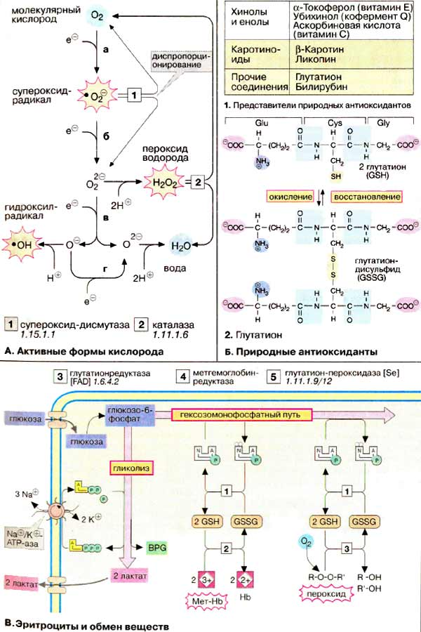
Кислотно-основной баланс
А. Концентрация ионов водорода в плазме крови
Концентрация ионов Н+ в плазме и в межклеточном пространстве составляет около 40 нМ. Это соответствует величине рН 7,40. рН внутренней среды организма должен поддерживаться постоянным, так как существенные изменения концентрации прогонов не совместимы с жизнью.
Постоянство величины рН поддерживается буферными системами плазмы (схема В), которые могут компенсировать кратковременные нарушения кислотно-основного баланса. Длительное рН-равновесие поддерживается с помощью продукции и удаления протонов. При нарушениях в буферных системах и при несоблюдении кислотно-основного баланса, например в результате заболевания почек или сбоев в периодичности дыхания из-за гипо- или гипервентиляции, величина рН плазмы выходит за допустимые пределы. Уменьшение величины рН 7,40 более, чем на 0,03 единицы, называется ацидозом, а повышение — алкалозом
Б. Кислотно-основной баланс
Происхождение протонов. Существуют два источника протонов — свободные кислоты пищи и серосодержащие аминокислоты белков, полученные с пищей кислоты, например лимонная, аскорбиновая и фосфорная, отдают протоны в кишечном тракте (при щелочном рН). В обеспечение баланса протонов наибольший вклад вносят образующиеся при расщеплении белков аминокислоты метионин и цистеин. В печени атомы серы этих аминокислот окисляются до серной кислоты, которая диссоциирует на сульфат-ион и протоны.
При анаэробном гликолизе в мышцах и эритроцитах глюкоза превращается в молочную кислоту, диссоциация которой приводит к образованию лактата и протонов. Образование кетоновых тел — ацетоуксусной и 3-гидроксимасляной кислот — в печени также приводит к освобождению протонов, избыток кетоновых тел (при голодании, сахарном диабете) ведет к перегрузке буферной системы плазмы и снижению рН (метаболический ацидоз; молочная кислота → лактацидоз, кетоновые тела → кетоацидоз ). В нормальных условиях эти кислоты обычно метаболизируют до СО2 и Н2О и не влияют на баланс протонов.
Удаление протонов. В почках протоны попадают в мочу за счет активного обмена на Na+-ионы. При этом в моче протоны забу-фериваются, взаимодействуя с NH3 и фосфатом.
В. Буферные системы плазмы
Наиболее важной буферной системой плазмы является бикарбонатный буфер, состоящий из слабой угольной кислоты (рК1 6,1) и ее кислого аниона бикарбоната. Угольная кислота Н2СО3 находится в равновесии со своим ангидридом СО2. Установление равновесия между обеими формами ускоряется ферментом карбонат-дегидратазой ("карбоангидразой"). При рН плазмы концентрации НСО3- и СО2 находятся в соотношении 20/1. Растворенный в крови СО2 равновесно обменивается с СО2 газовой фазы альвеол легких. Поэтому НСО3-/СО2 -система является эффективной открытой буферной системой. Ускоренное или замедленное дыхание изменяет концентрацию СО2, что приводит к изменению рН плазмы (дыхательный ацидоз или соответственно алкалоз). Таким образом, легкие могут быстро и действенно влиять на рН плазмы без участия систем удаления прогонов.
Белки плазмы и особенно гемоглобин эритроцитов также способны присоединять протоны, поддерживая постоянство рН. Определенный вклад в буферные свойства крови вносит фосфат.
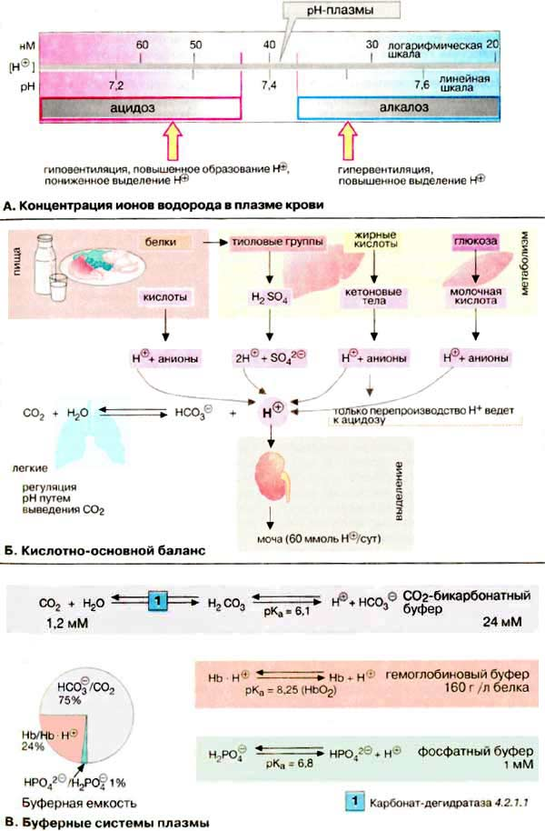
Свертывание крови
При нарушении целостности кровеносной системы уменьшение кровопотери обеспечивает система гемостаза. Гемостаз поддерживается двумя путями: остановкой кровотечения с помощью тромбоцитов и свертыванием крови. В данном разделе основное внимание уделено ферментативным реакциям свертывания крови. Повторное растворение сгустков крови, фибринолиз, рассмотрен.
Номенклатура факторов свертывания крови несколько запутана. Факторы нумеруются римскими цифрами, при этом активированная форма фактора в наименовании содержит дополнительно букву «а» после римской цифры. Многие факторы являются протеиназами. На схеме неактивные предшественники протеиназ представлены в виде окружностей, а активные ферменты — окрашенными кружочками с вырезанным сектором. Вспомогательные факторы показаны в виде прямоугольников.
А.Свертывание крови
При свертывании крови происходит ферментативное превращение растворимого белка плазмы фибриногена (фактора I) в фибриновый полимер, сеть волокон нерастворимого белка. В этой реакции принимает участие фермент тромбин (фактор IIа), который протеолитически отщепляет от молекулы фибриногена небольшой пептидный фрагмент, в результате чего освобождаются участки связывания, что позволяет молекуле фибрина агрегировать в полимер. Затем с помощью глутамин-трансферазы (фактора XIII) образуются изопептидные связи боковых цепей аминокислот фибрина, что приводит к формированию нерастворимого фибринового сгустка (тромба).
Свертывание крови может запускаться двумя различными путями: вследствие нарушения целостности ткани (внесосудистый путь, на схеме справа) или процессами, которые начинаются на внутренней поверхности сосуда (внутрисосудистый путь, на схеме слева). В обоих случаях запускается каскад протеолитических реакций: из неактивных предшественников ферментов (зимогенов, условно обозначаемых на схеме окружностями) путем отщепления пептидов образуются активные сериновые протеиназы (обозначаемые на схеме окрашенными кружочками с вырезанным сектором), которые в свою очередь действуют на другие белки. Оба реакционных пути нуждаются в ионах Са2+ и фосфолипидах [ФЛ (PL)] и оба завершаются активацией фактором Ха протромбина (фактора II) с образованием тромбина (IIа).
Внутрисосудистый путь инициируется коллагеном, который в норме не экспонирован на внутренней поверхности кровеносных сосудов; его контакт с кровью приводит к активации фактора XII. Внесосудистый путь активации начинается с освобождения фактора III (тканевого тромбопластина) из поврежденных клеток ткани. В течение нескольких секунд этот фактор приводит к свертыванию крови в области раны.
Факторы свертывания II, VII, IX и X содержат необычную аминокислоту, γ-карбоксиглутаминовую (Gla). Остатки Gla, которые образуются в результате посттрансляционного карбоксилирования остатков глутаминовой кислоты, группируются в особых белковых доменах. Они присоединяют ионы Са2+ и вследствие этого связывают соответствующие регуляторные факторы с фосфолипидами на поверхности плазматической мембраны. На рисунке это схематически представлено на примере протромбинового комплекса (Va, Ха и II). Вещества, способные связывать свободные ионы Са2+ в виде комплекса, например цитрат, предотвращают это взаимодействие с фосфолипидами и тормозят свертывание. Для синтеза остатков Gla необходим в качестве кофактора витамин К. Антагонисты витамина К, такие, как дикумарин, подавляют синтез активных факторов коагуляции и действуют поэтому также как ингибиторы свертывания.
Генетически обусловленный дефицит отдельных факторов свертывания приводит к кровоточивости (гемофилия).
Контроль за свертыванием крови (не показан на схеме). Процесс свертывания крови находится в постоянном равновесии между активацией и торможением. Для торможения в плазме имеются очень эффективные ингибиторы протеиназ. Сериновые протеиназы системы свертывания инактивируются антитромбином. Его действие усиливается сульфатированным глюкозаминогликаном — гепарином. Тромбомодулин, расположенный на внутренней стенке кровеносных сосудов, инактивирует тромбин, образуя с ним стехиометрический комплекс. За протеолитическое разрушение факторов V и VIII в плазме отвечает белок с. Этот белок в свою очередь активируется тромбином и, тем самым, реализуется самотормозящийся механизм свертывания крови.
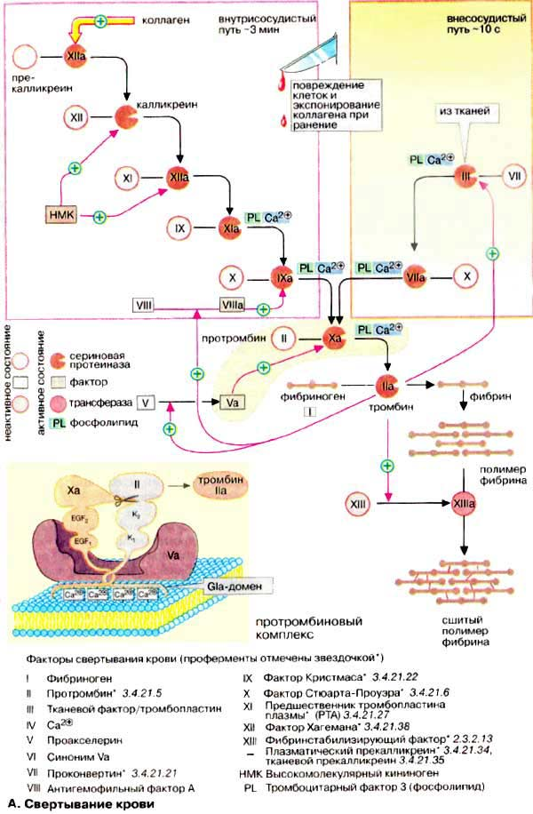
Фибринолиз. Группы крови
А. Фибринолиз
Образующийся в результате свертывания крови фибриновый тромб растворяется благодаря действию плазмина — сериновой протеиназы плазмы крови. В плазме плазмин находится в виде предшественника — плазминогена. Последний может активироваться протеиназами различных тканей, например, активатором плазминогена из почек (урокиназой) и тканевым активатором плазминогена (ТАП) из эндотелия сосудов. Активность плазмина контролируется белком плазмы α2-антиплазмином, способным связывать и инактивировать активный плазмин.
Генно-инженерная урокиназа, ТАГ] и стрептокиназа бактерий являются фармакологическими препаратами, назначаемыми для рассасывания тромбов после инфаркта миокарда.
Б. Группы крови: система ABO
Попадание в кровь чужеродных макромолекул вызывает образование антител. Этот феномен подробно изучен на примере группоспецифических антигенов.
На поверхности эритроцитов и других клеток крови находятся гликопротеины [ГП (GP)] и гликолипиды, которые могут действовать как сильные антигены. Из 16 найденных к настоящему времени систем групп крови с более чем 200 вариантами особенно важны для медицины системы АВО и резус фактор.
По системе АВО группы крови делятся на А, В, АВ и 0 (нулевая)*. У носителей группы крови А на поверхности эритроцитов находятся антигены (гликопротеины или гликолипиды) с характерной олигосахаридной группой. Характеристичный антиген людей с группой крови В отличается от А только заменой концевого остатка олигосахарида (галактоза вместо N-ацетилгалактозамина). Носители группы крови АВ имеют оба антигена А и В, а у носителей группы крови 0 олигосахарид гликопротеина укорочен на этот концевой остаток сахара (Η-антиген). Причиной групповых различий крови являются незначительные мутации в гликозил-трансферазах, которые переносят концевой остаток сахара на характеристичный олигосахарид гликопротеина мембраны эритроцита.
В крови носителей группы А присутствуют антитела (типа IgM, не проходящие через плаценту) против антигена В. Вероятно, это является следствием иммунизации бактериальной флорой кишечника, имеющей антигены, похожие на характеристичные. У носителей группы крови В имеются антитела против антигена А, а носители группы крови 0 (антиген Н) имеют антитела против антигенов А и В. В крови носителей группы крови АВ нет никаких антител против группоспецифичных антигенов. Если смешать кровь группы А с кровью или сывороткой группы В, которая содержит антитела против А-антигена, то это приведет к агглютинации эритроцитов антителами. По этой причине перед переливанием крови необходимо проверять на совместимость кровь донора и реципиента. В крови реципиента не должны присутствовать антитела против эритроцитов донора, а в крови донора — антитела против эритроцитов реципиента.
Иммуногенным вариантом белка на поверхности эритроцитов является резус-фактор (на схеме не показан). Он был открыт впервые у обезьян макак резус. Наиболее распространен вариант резус D (белок из 417 аминокислот); он встречается у 84% всех европеоидов, которые являются поэтому «Rh-положительными». Если у Rh-отрицательной матери рождается Rh-положительный ребенок эритроциты плода могут во время родов попасть в кровоток матери и там вызвать сильное образование антител (тип IgG, плацентарный) против резус D-антигена, что впрочем не вызывает серьезных осложнений ни у матери, ни у ребенка. Только повторная беременность Rh-положительным ребенком приводит к осложнениям, так как антирезусные антитела матери, которые переходят перед родами через плаценту в кровоток Rh-положительного ребенка, могут разрушать эритроциты ребенка (эритробластоз плода).
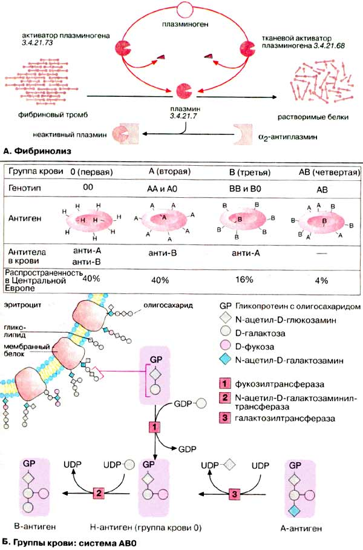
Иммунный ответ
Вирусы, бактерии, грибы и паразиты, проникающие в организм позвоночных, могут узнаваться иммунной системой и уничтожаться ею. По аналогичному механизму опознаются системой и устраняются трансформированные клетки организма, например опухолевые. Иммунная система в состоянии опознавать инородные тела, специфически реагировать на них и сохранять это событие в «памяти».
Ответ на структуру чужеродного вещества, антиген, осуществляемый клетками иммунной системы, лимфоцитами, бывает различного типа.
За клеточный иммунитет ответственны Т - лимфоциты (Т - клетки). Эти иммунные клетки названы так из-за тимуса, в котором они подвергаются основным стадиям своей дифференциации (школа Т-клеток). Активность Т-клеток направлена против зараженной вирусом клетки организма, а также на защиту от грибов и паразитов. Т-Клетки принимают активное участие в процессе отторжения чужеродной ткани и помогают в формировании гуморального иммунного ответа (см. ниже). По своей функции они делятся на цитотоксические Т-клетки — Т-киллеры (на схеме зеленого цвета) и клетки-помощники — Т-хелперы (на схеме голубого цвета).
В свою очередь гуморальный иммунный ответ направлен на активацию В-лимфоцитов (В-клетки, на схеме светло-коричневый цвет), которые созревают в костном мозге в отличие от Т-клеток тимуса. В-Клетки несут на своей поверхности антитела и выделяют их в плазму. Антитела обладают способностью специфически связывать соответствующие антигены. Связывание антител с антигенами — решающее звено в системе защиты организма от внеклеточных вирусов и бактерий. В результате такого связывания последние опознаются как инородные тела и в дальнейшем уничтожаются.
"Память" иммунной системы представлена так называемыми "клетками памяти". Эти наиболее долгоживущие клетки существуют для каждого типа иммунных клеток.
А. Упрощенная схема иммунного ответа
Проникший в организм вирус эндоцитируется макрофагами и затем частично разрушается в эндоплазматическом ретикулуме (1). В результате образуются чужеродные фрагменты, которые экспонируются на клеточной поверхности макрофагов (2). Эти фрагменты «презентируются» специальной группой мембранных белков (белки ГКГС). Комплекс из вирусного фрагмента и белка главного комплекса гистосовместимости [ГКГС (МНС)] распознается и связывается Т-клетками с помощью специфических (Т-клеточных) рецепторов. Среди огромного числа Т-клеток только немногие обладают подходящим рецептором (3), Связывание приводит к активации этих Т-клеток и появлению их селективных копий (4, "клональная селекция"). В активации Т-клеток участвуют различные гормоноподобные Сигнальные белки, интерлейкины [ИЛ (IL)]. Эти белки секретируются теми клетками иммунной системы, которые активируются при связывании с Т-клетками. Так, активированные макрофаги с презентируемым вирусным фрагментом секретируют IL-1 (5), а Т-клетки продуцируют IL-2 (6), который стимулирует их собственное клональное копирование и репликацию Т-хелперных клеток.
Клонированные и активированные Т-клетки осуществляют различные функции в зависимости от их типа. Цитотоксические Т-клетки (на схеме зеленого цвета) способны узнавать и связывать те клетки организма, которые инфицированы вирусами и на своих рецепторах ГКГС несут фрагменты вируса (7). Цитотоксические Т-клетки секретируют перфорин — белок, который делает проницаемой мембрану связанной инфицированной клетки, что и приводит к ее лизису (8).
Т-Хелперы (на схеме голубого цвета), напротив, связываются с В-клетками, которые презентируют на своей поверхности фрагменты вируса, связанные с белком ГКГС (9). Это ведет к селективному клонированию индивидуальных В-клеток и их массированной пролиферации, Интерлейкин стимулирует (10) созревание В-клеток — превращение в плазматические клетки (11), способные синтезировать и секретировать антитела (12).
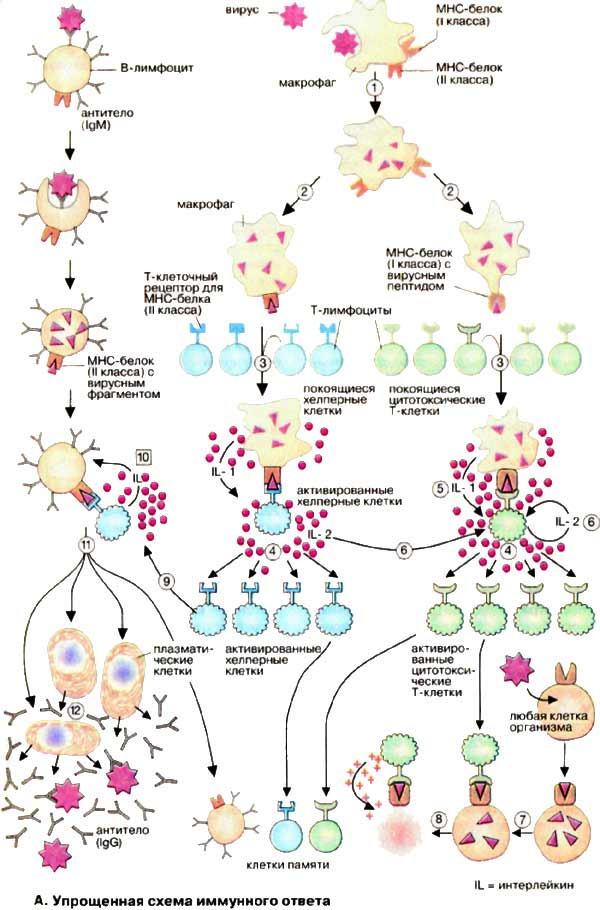
Антитела
А. Доменная структура иммуноглобулина G
Иммуноглобулины (Ig), или антитела, являются семейством Y-образных (по пространственной структуре) гликопротеинов, у которых обе вершины («буквы Y») могут связывать антиген. Иммуноглобулины находятся в виде мембранных белков на поверхности лимфоцитов и в свободном виде в плазме крови. На схеме показана структура наиболее важного из них — иммуноглобулина класса G (IgG). Молекула представляет собой крупный тетрамер (Н2L2 с 150 кДа) из двух идентичных тяжелых цепей (Н-цепей, на схеме красного или оранжевого цвета) и двух идентичных легких цепей (L-цепей, на схеме желтого цвета). В обеих H-цепях имеется ковалентно связанный олигосахарид (на схеме фиолетового цвета).
Иммуноглобулины расщепляются протеиназой папаином на два Fab-фрагмента и один Fc-фрагмент. Оба Fab-фрагмента (от англ. antigen binding fragment — антиген-связывающий фрагмент) состоят соответственно из одной L-цепи и N-концевой части H-цепи. Изолированные Fab-фрагменты сохраняют способность связывать антиген. Fс-Фрагмент (от англ. fragment crystallizable — способный кристаллизоваться) состоит из С-концевой половины обеих H-цепей. Эта часть IgG выполняет функции связывания с клеточной поверхностью, взаимодействия с системой комплемента и участвует в переносе антител клетками.
Несмотря на большое разнообразие в иммуноглобулинах соблюдается общий принцип строения. Обе тяжелые пептидные цепи (Н-цепи) IgG состоят из четырех глобулярных доменов VH, СH1, СH2 и СH3, обе легкие (L- цепи) — из двух глобулярных доменов CL и VL. При этом буквы С и V соответственно обозначают константные (англ. constant) и вариабельные (англ. variable) области. Обе тяжелые цепи, а также тяжелая цепь с легкой, связаны дисульфидными мостиками. Дисульфидные мостики внутри доменов стабилизируют третичную структуру. Домены имеют длину около 110 аминокислот и обладают взаимной гомологией. Такая структура антител, очевидно, возникла благодаря дупликации гена.
В центральной области молекул иммуноглобулинов расположен шарнирный участок, который придает антителам внутримолекулярную подвижность.
Б. Классы иммуноглобулинов
Иммуноглобулины человека по структуре тяжелых цепей делятся на пять классов. Различия между IgA (с двумя подклассами), IgD, IgE, IgG (с четырьмя подклассами) и IgM определяются H-цепями, которые обозначаются греческими буквами — α, β, ε, γ и μ. L-Цепи имеют только две разновидности (κ и λ). IgM могут существовать в различных формах. Секретируемые IgM состоят из пяти взаимосвязанных димеров. IgA могут быть образованы из одного, двух или трех димеров. Олигомерные IgM и IgA удерживаются вместе благодаря связывающему J-пептиду (от англ. joining).
Иммуноглобулины всех пяти классов являются секретируемыми белками. Они поставляются в кровь зрелыми В-клетками (плазматическими клетками), Ранние варианты IgM и IgD найдены также в виде интегральных мембранных белков на поверхности В-клеток.
Антитела имеют различные функции. При контакте с чужеродным антигеном первыми образуются lgM-антитела. Ранние формы IgM связаны с поверхностью В-клеток, более поздние формы секретируются в виде пентамеров плазматическими клетками. Антитела IgM особенно активны против микроорганизмов. В количественном отношении превалируют антитела IgG (см. таблицу сывороточных концентраций белков). Они находятся в крови и в интерстициальной жидкости; с помощью рецепторов они могут также проходить в плаценту и вследствие этого переноситься от матери к плоду. IgA обнаруживаются преимущественно в кишечном тракте и секретах. IgE присутствуют в плазме здорового человека лишь в незначительных, концентрациях. Повышение уровня IgE наблюдается при аллергических реакциях и паразитарных инфекциях*. Количества в плазме IgD, функция которого еще не выяснена, также весьма малы.
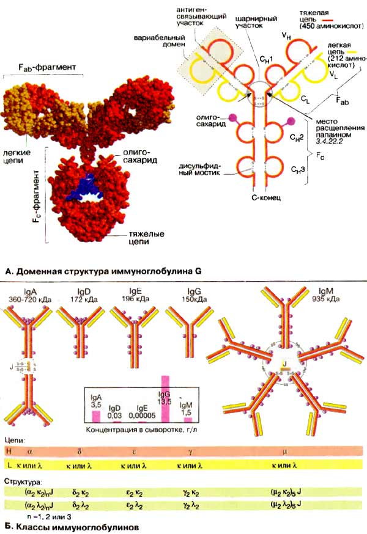
Биосинтез антител
А. Вариабельность иммуноглобулинов
Несмотря на сходство своей основной структуры иммуноглобулины (Ig) чрезвычайно разнообразны. Считается, что в организме человека имеется примерно 108 различных вариантов антител. Вариабельность Ig относится как к легким, так и тяжелым цепям.
Имеется пять разновидностей тяжелых H-цепей (α, β, ε, γ и μ), которые и определяют классы антител, и две разновидности легких L-цепей (κ и λ). Эти типы вариаций называют изотопическими. При биосинтезе Ig может происходить переключение плазматических клеток с продукции одного изотипа на другой («переключение генов»). Аллотипические вариации относятся к вариабельности аллелей в пределах вида, т. е. к генетически определяемым различиям одного индивидуума от другого. Идиотипические вариации определяют различия в антигенсвязывающем участке антител, Они касаются вариабельных доменов (на схеме розового цвета) легкой и тяжелой цепей. Некоторые их участки являются гипервариабельными (красного цвета на рисунке), т.е. их отличия особенно велики. Эти последовательности непосредственно участвуют в связывании антигена.
Б. Причины разнообразия антител
Исключительная вариабельность антител обусловлена тремя причинами.
1. Множественность генов. Имеется множество генов, кодирующих белки вариабельных доменов, однако выбирается и экспрессируется только один ген.
2. Соматические рекомбинации. Гены разделены на несколько сегментов, для которых имеются различные версии. Во время созревания В-клеток благодаря случайной комбинации сегментов возникают новые гены (мозаичные гены).
3. Соматические мутации. Во время дифференциации В-клеток и превращения в плазматические клетки происходят мутации в кодирующих генах. Таким образом, изначальные гены терминальной линии могут стать различными соматическими генами в индивидуальных клонах В-клеток.
В. Биосинтез легкой цепи
Рассмотрим основные особенности организации гена иммуноглобулина и его экспрессии на примере биосинтеза мышиной κ-цепи. Сегменты гена, кодирующие эту легкую цепь, обозначаются как L, V, J и С. Они локализованы на хромосоме 6 в ДНК (DNA) терминальной линии клеток мыши (у человека на хромосоме 2) и разделены друг от друга интронами различной длины.
Примерно 150 идентичных сегментов L гена кодируют сигнальный пептид (17-20 аминокислот) для секреции продукта (см. рис). Наибольшая часть вариабельного домена (95 из 108 аминокислотных остатков) кодируется около 150 различными V-сегментами, расположенными рядом с L-сегментом. L- и V-сегменты всегда расположены парами, так называемым тандемом. Напротив, для J-сегмента (от англ. joining) существует максимально только пять вариантов. Они кодируют пептид из 13 аминокислотных остатков, который связывает вариабельную и константную части κ-цепи. Константная часть легкой цепи (84 аминокислоты) кодируется единственным С-сегментом.
Во время дифференциации В-лимфоцитов уникальная V/J-комбинация возникает в каждой В-клетке. Один из 150 сегментов L-V-тандема выбирается и связывается с одним из пяти J-сегментов. Это приводит к возникновению соматического гена, который значительно меньше по сравнению с геном терминальной линии. Транскрипция этого гена ведет к образованию гяРНК (hnRNA) для κ-цепи. Из этой РНК удаляются путем сплайсинга интроны и лишние J-сегменты. Зрелая мРНК (mRNA) содержит сегменты L-V-J-C и после транспорта в цитоплазму готова для трансляции. Последующие шаги биосинтеза Ig те же, что и для других мембранных или секреторных белков.
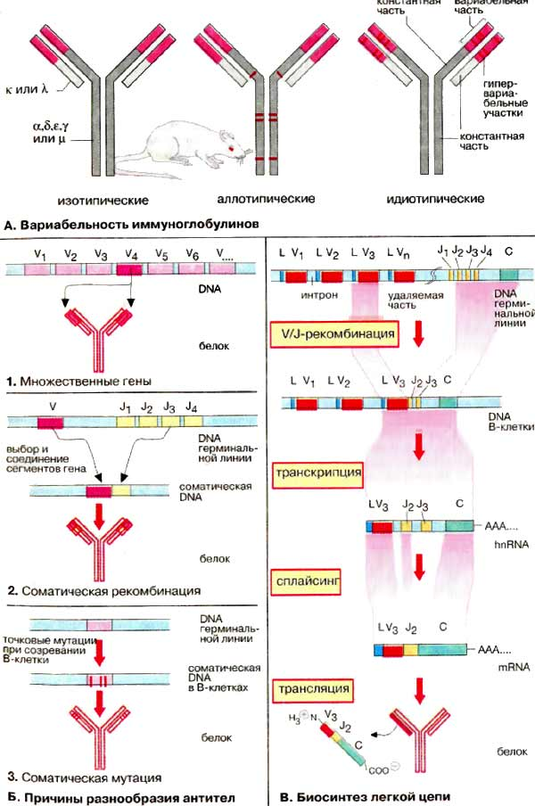
Белки главного комплекса гистосовместимости (ГКГС)
А. Белки суперсемейства гена иммуноглобулинов
Общие функции белков этого семейства состоят в способности специфически узнавать и отличать макромолекулы друг от друга при клеточном взаимодействии. В определенных случаях связывание чужеродных молекул приводит к передаче сигнала в клетку. Общий признак этих белков — наличие в их структуре одного или нескольких так называемых иммуноглобулиновых доменов, для которых характерными являются пептидные последовательности длиной в 70-110 аминокислотных остатков, присутствующих также в иммуноглобулинах (Ig). Ig-домены имеют структуру сэндвича, который построен из антипараллельных β-складчатых листов, соединенных дисульфидным мостиком.
Представителями этого суперсемейства белков являются иммуноглобулины, белки ГКГС (МНС) и рецепторы Т-клеток (см. ниже), Fc-рецепторы, мембранные белки CD3, CD4, CD8, молекулы клеточной адгезии и рецепторы для различных факторов роста. Многие из этих белков состоят из константных (на схеме коричневого или зеленого цвета) и вариабельных (оранжевого цвета) участков. Гомологичные домены показаны одним цветом. За исключением секретируемых форм почти все белки суперсемейства имеют трансмембранные сегменты на С-конце молекулы, которые могут быть встроены в мембрану. Дисульфидные связи расположены в характерных местах пептидной цепи и могут быть внутри- и межмолекулярными.
Иммуноглобулины рассмотрены. Показанный на схеме IgM — интегральный мембранный белок, который участвует в ранней стадии образования антител на поверхности В-клеток.
Т-Клеточные рецепторы расположены на поверхности Т-клеток. Они имеют антителоподобную структуру с одной α- и одной β-цепями, которые содержат константный и вариабельный домены. В отличие от антител Т-клеточные рецепторы имеют только один связывающий участок, который может узнавать и связывать фрагменты чужеродных белков. Такие фрагменты презентируются белками ГКГС, локализованными на поверхности клеток (см. ниже).
CD8 — мембранный белок, который образуется цитотоксическими Т-клетками. Он принадлежит к белкам ГКГС класса I и действует как корецептор (схема Б).
Белки ГКГС (главного комплекса гистосовместимости), названы так, поскольку кодируются последовательностью ДНК, известной как главный комплекс гистосовместимости. Белки ГКГС человека относятся к антигенам лейкоцитов — HLA (от англ. human-leucocyte-associated antigens). Белки ГКГС образуются всеми метками позвоночных. Полиморфизм этих белков настолько велик, что представляется маловероятным, чтобы два индивидуума несли одинаковый набор белков ГКГС, если они не являются однояйцевыми близнецами. Белки ГКГС связывают на своей вариабельной части небольшие пептиды, которые презентируются Т-клетками.
Белки ГКГС подразделяются на два больших класса. Белки ГКГС класса I найдены на поверхности почти всех ядерных клеток организма. Именно эти белки вызывают отторжение тканей при трансплантации от другого индивидуума. Они состоят только из α-цепи, связанной с β2-микроглобулином небольшим инвариантным белком. Молекулы белков ГКГС класса II построены из двух гомологичных пептидных цепей (α и β). Они находятся на поверхности клеток иммунной системы и отличают последние от остальных клеток организма.
Б. Активация цитотоксических Т-клеток
Инфицированная клетка презентирует с помощью белков ГКГС класса I небольшой чужеродный пептид, который может связываться с поверхностью Т-клетки с помощью Т-клеточных рецепторов. Цитотоксическая Т-клетка несет на поверхности кроме Т-клеточных рецепторов также белок CD8, связывающий комплекс из молекул ГКГС и чужеродного пептида. Это активирует цитотоксическую Т-клетку и делает ее способной разрушать инфицированную клетку. В рамке на рисунке показан пептидпрезентирующий домен молекулы ГКГС класса I со связанным чужеродным пептидом (на схеме фиолетового цвета).
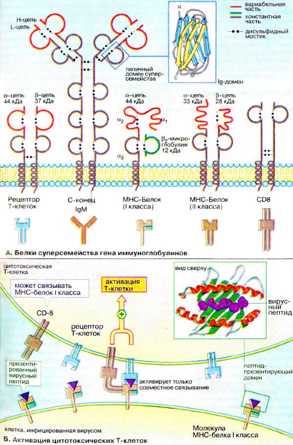
Система комплемента
Система комплемента является частью иммунной системы, она осуществляет неспецифическую защиту от бактерий и других проникающих в организм возбудителей болезней. Система комплемента состоит примерно из 20 различных белков — «факторов (компонентов) комплемента», которые находятся в плазме крови и составляют около 4% от всех белков плазмы.
А. Активация комплемента
Система комплемента может действовать тремя различными способами:
• через хемотаксис: различные компоненты (факторы) комплемента могут привлекать иммунные клетки, которые атакуют бактерии и пожирают их (фагоцитируют);
• через лизис: компоненты комплемента присоединяются к бактериальным мембранам, в результате чего образуется отверстие в мембране и бактерия лизируется;
• через опсонизацию: компоненты комплемента присоединяются к бактерии, в результате чего образуется метка для узнавания фагоцитирующими клетками (например, макрофагами и лейкоцитами). имеющими рецепторы к компонентам комплемента.
Реакции системы комплемента осуществляются, как правило, молекулами на поверхности микроорганизма. Факторы (компоненты) с С1 по С9 (С от англ. complement) формируют так называемый «классический путь» (1) активации комплемента, факторы В и D участвуют в активации «альтернативного пути» (2). Другие компоненты системы комплемента, здесь не показанные, выполняют регуляторные функции.
Ранние компоненты системы комплемента являются сериновыми протеиназами. Они создают амплифицирующий ферментативный каскад реакций. Классический путь инициируется связыванием компонента C1 (3) с несколькими молекулами IgG или с пентамерным IgM на поверхности микроорганизма (см. ниже). Альтернативный путь инициируется связыванием фактора В, например, с бактериальным липополисахаридом (эндотоксином). Оба пути ведут к расщеплению компонента С3 комплемента на два фрагмента, обладающих различными функциями. Меньший фрагмент С3а принимает участие в развитии воспалительного процесса, индуцируя хемотаксис лейкоцитов к очагу воспаления (хемотаксис, воспалительные процессы). Более крупный фрагмент С3b связывается ковалентно на поверхности бактериальной клетки и инициирует цепь реакций, приводящих к образованию мембраноатакующего комплекса (см. ниже) поздними компонентами системы комплемента.
Компонент C1 комплемента представляет собой сложный молекулярный комплекс, состоящий из трех различных компонентов C1q, C1r и C1s (3). Гексамерный C1q по форме напоминает букет нераскрытых тюльпанов, «бутоны» которого могут связываться с Fс-фрагментом антител. При связывании нескольких C1q с антителами активируется серин-протеиназа C1r, с которой начинается протеолитический каскад классического пути.
Компонент СЗ комплемента стоит в центре активации системы. СЗ подвергается протеолизу СЗ-конвертазой с расщеплением на СЗа и СЗb фрагменты и участвует в формировании С5-конвертазы. СЗ-конвертаза представляет собой комплекс из C4b и С2а (в случае классического пути) или из СЗb и Bb (в случае альтернативного пути). При гидролизе СЗ в СЗb становится доступной очень реакционноспособная тиолслож-ноэфирная группа, которая реагирует с гидроксильной или аминогруппой (4). Вследствие этого СЗb ковалентно связывается с молекулами бактериальной мембраны (опсонизация).
Мембраноатакующий комплекс — это ионный канал (пора), в плазматической мембране бактериальной клетки, в формировании которого участвуют компоненты СЗb, С5b, С6, С7, С8 и главным образом С9 (5). При этом молекулы С9 последовательно присоединяются к агрегату, формируя кольцевую структуру, через центр которой могут диффундировать небольшие молекулы, такие, как вода и ионы. Осмотические силы способствуют «накачиванию» воды внутрь бактериальной клетки, которая набухает и лопается (лизирует).
Активность системы комплемента контролируется ингибиторами в плазме крови, блокирующими избыточную реакцию.
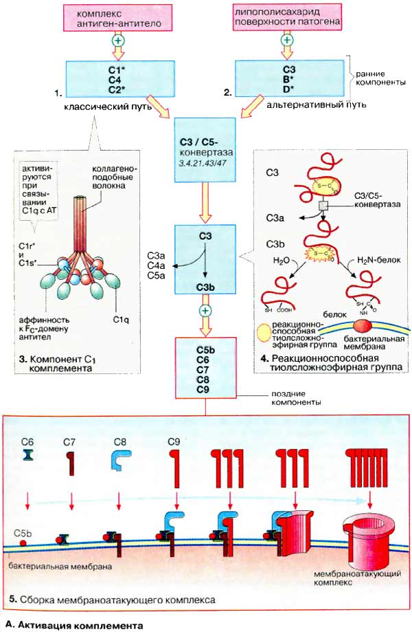
Моноклональные антитела, иммуноанализ
А. Моноклональные антитела
Моноклональные антитела (МАТ) секретируются иммунными клетками, происходящими от единственной антителообразующей клетки. Поэтому МАТ направлены только против определенного эпитопа иммуногенного вещества, так называемой "антигенной детерминанты". Для получения МАТ изолируют лимфоциты из селезенки иммунизированной мыши (1) и производят их слияние с опухолевыми клетками мыши (клетками миеломы) (2). Это необходимо, так как жизнеспособность антителопродуцирующих лимфоцитов в культуре ограничена лишь несколькими неделями. При слиянии с опухолевой клеткой возникают гибридные клетки, так называемые гибридомы, которые являются потенциально бессмертными.
Слияние клеток (2) является редким событием, частота которого повышается в присутствии полиэтиленгликоля [ПЭГ (PEG)]. Отбор продуктивных гибридных клеток проводится при длительной инкубации первичной культуры в ГАТ-среде (НАТ-среде) (3), содержащей гипоксантин, аминоптерин и тимидин. Аминоптерин, аналог дигидрофолиевой кислоты, конкурентно ингибирует дигидрофолат-редуктазу и тем самым биосинтез дТМФ. Поскольку дТМФ существенно необходим для синтеза ДНК, миеломные клетки не могут выживать в присутствии аминоптерина. С другой стороны, клетки селезенки могут преодолевать действие ингибитора, используя для синтеза ДНК гипоксантин и тимидин, однако и они существуют в течение ограниченного времени. Только гибридома выживает в виде культуры в среде ГАТ, так как эти клетки обладают одновременно бессмертием миеломных клеток и способностью клеток селезенки приспосабливаться к аминоптерину.
в действительности продуцировать антитела способны только единичные гибридомные клетки. Такие клетки необходимо выделить и размножить клонированием (4). После тестирования клонов на способность образовывать антитела отбираются положительные культуры, которые снова клонируются и подвергаются последующей селекции (5). В результате получают гибридому, продуцирующую моноклональные антитела. Производство моноклональных антител этими клетками осуществляют in vitro в биореакторе или in vivo в асцитной жидкости мыши (6).
Б. Иммуноанализ
Иммуноанализ — это полуколичественный метод определения содержания веществ, присутствующих в очень низких концентрациях. В принципе иммуноанализом можно определять любые соединения, вызывающие образование антител.
Основой этого метода является «реакция» антиген-антитело, т. е. специфическое связывание антитела с определяемым веществом. Из многих разработанных методов иммуноанализа, таких, как радиоммунный анализ (РИА), хемилюминесцентный иммуноанализ и т.д., здесь рассматривается вариант иммуноферментного анализа (ИФА).
Образцы сыворотки крови, содержащие определяемое вещество, к примеру гормон тироксин, помещаются в лунки планшета для микротитрования (1), на стенках которых сорбированы антитела, способные специфически связывать гормон. Одновременно в инкубационную смесь вносится небольшое количество тироксина, химически связанного с ферментом, так называемый конъюгат (1). Конъюгат и определяемый гормон конкурируют между собой за связывание с ограниченным количеством сорбированных антител. После того как связывание антигенов произошло (2), несвязавшиеся молекулы отмывают. Для определения количества связавшегося конъюгированного антигена в лунки вносят раствор хромогенного субстрата (субстратный буфер) и окрашенные продукты ферментативной реакции (3) определяют фотометрически (4).
Чем большее количество конъюгата свяжется с антителами, сорбированными на стенках лунки микропланшета, тем выше содержание окрашенного продукта ферментативной реакции. В то же время, чем больше гормона в тестируемой пробе, тем меньше конъюгата будет связываться с антителами. Количественная оценка осуществляется с помощью градуировочной кривой, которую строят по стандартным образцам с известной концентрацией, проводя несколько параллельных измерений.
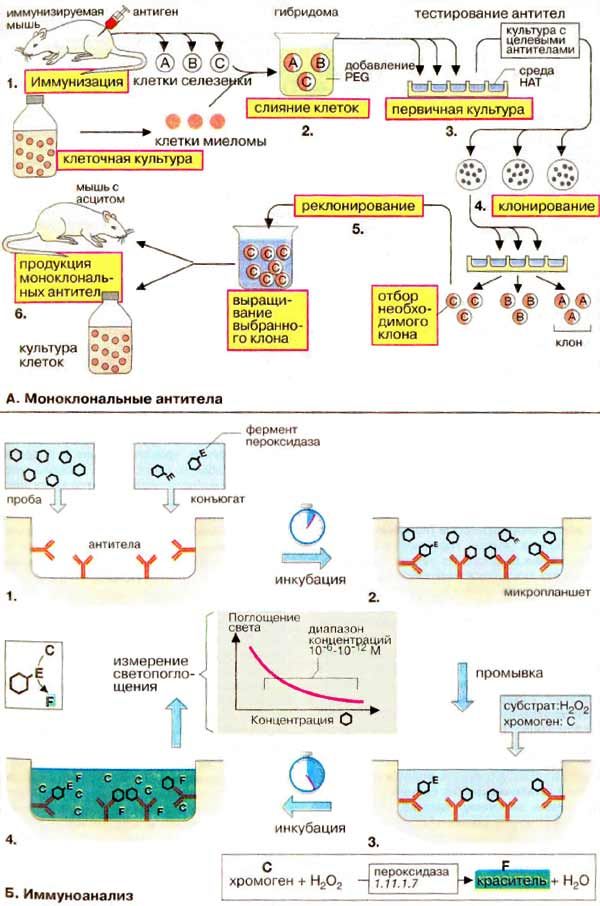

Источник: yanko.lib.ru
(c) Регент
[Наверх]